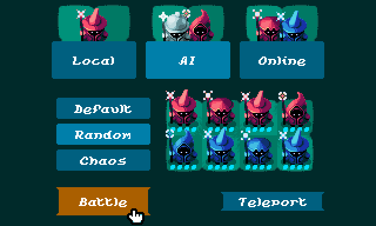
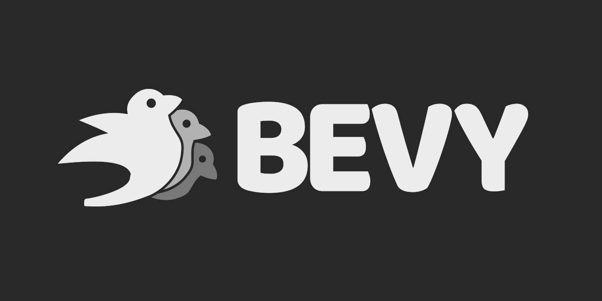

This Month in Rust GameDev #45 - April 2023
Welcome to the 45th issue of the Rust GameDev Workgroup's monthly newsletter. Rust is a systems language pursuing the trifecta: safety, concurrency, and speed. These goals are well-aligned with game development. We hope to build an inviting ecosystem for anyone wishing to use Rust in their development process! Want to get involved? Join the Rust GameDev working group!
You can follow the newsletter creation process by watching the coordination issues. Want something mentioned in the next newsletter? Send us a pull request. Feel free to send PRs about your own projects!
- Announcements
- Game Updates
- Engine Updates
- Learning Material Updates
- Tooling Updates
- Library Updates
- Other News
- Discussions
- Requests for Contribution
Announcements
Rust GameDev Meetup

The 26th Rust Gamedev Meetup took place in March. You can watch the recording of the meetup here on Youtube. The meetups take place on the second Saturday of every month via the Rust Gamedev Discord server and are also streamed on Twitch.
Bevy Jam 3 Results
Voting on the Bevy Jam 3 has finished! It was a week-long event, where the goal was to make a game in Bevy Engine, the free and open-source game engine built in Rust. The theme was 'Side Effects'.
- 1: LinkSider by kuviman, daivy, shadow-crusherz
- 2: Neon Breach: Tower Defence by louisNivrat
- 3: Battle for Rattoria by jabuwu
The jam had a solid turnout with 353 participants, 78 submissions, and 2,158 ratings! A lot of the submissions have a web build so it's easy to try them out yourself.
The full results can be found on itch.io.
Rusty Jam 3
Another Rusty Jam starts on May 21st!
It's a great chance to try out some new Rusty tech, form a team of like-minded rustaceans, and feel what a full cycle of making a game in Rust feels like in miniature!
This jam focuses more on using Rust than anything else. That means you aren't restricted on your design, music, or graphics, as long as you use Rust to make it!
The optional-to-use theme for the jam is going to be announced in the jam's Discord and pinned in the community section. While you're waiting for the theme, you can start looking for a team in the looking-for-team Discord channel. If you want solo though, that's fine too.
Game Updates
CyberGate
 hundreds of npcs smoothly interpolating
hundreds of npcs smoothly interpolating
CyberGate (YouTube, Discord), an ambitious multiplayer project in development by CyberSoul, aims to invite players into a constantly evolving universe. Harnessing the power of procedural generation and artificial intelligence, this work-in-progress aspires to provide an engaging experience that emphasizes exploration and discovery across its diverse worlds.
The latest updates to CyberGate include:
- Networking Interpolation version 2: increased reliability over frame rate changes, improved accuracy of object motion and detail by ~20%, and objects update 12-45 milliseconds faster.
- Server compilation was drastically simplified (100x faster).
- Improved browser server process, to have more consistent behavior.
- Improved mouse lock on browsers.
- Simplified code related to state synchronization.
- Significant gameplay changes and bug fixes.
They are currently working on universe generation alghorithms for version 8.0. Participate by joining the Discord server.
Jumpy
 Online Matchmaking
Online Matchmaking
Jumpy (GitHub, Discord, Twitter) by Spicy Lobster is a pixel-style, tactical 2D shooter with a fishy theme.
In the last month, Jumpy released v0.7.0 with support for online and LAN network games! Networking has been a long time coming, with many architecture decisions being made specifically with networking in mind. While network performance may still need to be tweaked, and there are still some bugs to fix, the proof-of-concept was a success. You can start matches on your local network, or online, with no configuration necessary!
The Fish Folk game series has a pre-launch page up on Kickstarter, expected to go public in mid-May.
Thetawave

Thetawave is an open-source, physics based, space shooter game. This month, Thetawave 0.1.0 was released. The main features of this update were:
- local multiplayer,
- a second character,
- many sprite adjustments,
- and many gameplay tweaks from in-person playtesting with the thetawave arcade cabinet.
The easiest way to play the most up to date version of Thetawave on your machine is to download it through the Spicy Launcher. Otherwise, you can play the game in your browser on the itch.io page.
Feel free to reach out in the #thetawave channel in the Spicy Lobster discord server if you are interested in contributing.
Way of Rhea

Way of Rhea is a puzzle game with hard puzzles and forgiving mechanics being produced by @masonremaley in a custom Rust engine. You can support development by checking out the free demo and wishlisting on Steam or signing up for the mailing list!
Recent updates:
- Time controls (pause, play, fastforward)
- Staves switch in place so that crabs don't inadvertently move them when cycling
- Increased drag on various physics objects to prevent bouncing over targets
- Increased staff throw velocity to make it easier to throw staves off ledges
- Improved interactive hover visuals on staves
- Fixed bug where you could take objects from the crab while he's riding the elevator
- Fixed edge cases around saving on load screens
- Fixed edge cases with sleep system and pausing
- More flexible save points in crab puzzles (save points can now conditionally trigger only when a crab is present)
- More work on end game
Also, Way of Rhea was part of the Steam Puzzle Fest!
l1t
l1t by @alex-laycalvert is a WIP terminal game about shooting lasers and lighting statues to solve puzzles.
In each level, you have to configure mirrors, lasers, and other items to light up all the statues while avoiding any mishaps like shooting yourself with a laser beam.
There's only 4 core levels right now but in addition to adding more the developer is working on a repository system where web servers can host level files and users can subscribe to them.
Discussions: /r/rust
Maginet

Maginet by Evrim is a fast-paced turn-based strategy game with local/versus-ai/online play on PC/mobile where two guilds of mages battle each other.
This month's updates include:
- New mage and board sprites from @MrmoTarius.
- New main menu that brings the ability to switch between loadout modes.
- Better AI heuristics for evaluating the board.
- Better health UI.
The developers are looking for feedback from testers.
Idu

Idu (Discord) is a strategic sandbox game about growing plants that wish to reclaim nature, developed by Elina Shakhnovich and Johann Tael featuring a bespoke Vulkan-based engine in Rust.
This month a new demo was released:
- New inventory and interaction system.
- Office file cabinets for keeping things tidy.
- Converters convert signals from nearby flowers into colorful blocks.
Tiny Glade
 Demo of the gothic windows system
Demo of the gothic windows system
Tiny Glade (Twitter, Youtube) is a small relaxing game about doodling castles.
This month's updates include:
- More brick colors.
- New gothic windows style.
- Ability to merge windows together into a bigger one.
- New arch algorithm that works better for rough terrain.
- The project's beta testing should start this summer and the release should happen somewhere in 2024.
Hydrofoil Generation
Hydrofoil Generation (Steam, Facebook, Discord) is a realistic sailing/foiling inshore simulator in development for PC/Steam that puts you in the driving seat of modern competitive sailing that is available in Early Access on Steam.
This month's updates include:
- A brand new location to test your hydrofoil skills: Bermuda.
- An improved protocol for line crossing detection is now implemented, which means that Hydrofoil Generation is now even more fair and accurate.
- Also, the game won two Silver awards for the PC Game: Racing and Simulation category.
Engine Updates
Ambient
 A 10-second preview of what's possible with Ambient 0.2
A 10-second preview of what's possible with Ambient 0.2
Ambient 0.2 is now out after two months of development. Ambient is an open-source runtime for building high-performance multiplayer games and 3D applications powered by WebAssembly, Rust and WebGPU. Projects consist of assets and logic built around the currently Rust-only Ambient API, and these projects can be loaded by any compatible runtime running on any platform.
This release brings a few major features, including basic support for playing sounds, being able to run WASM on the client (in addition to the server), and automatic proxying of servers by the Ambient Proxy. This allows anyone with the URL to connect to a server, without having to worry about port forwarding.
Finally, Ambient UI can now be used from guest code. Combined with networking and ECS, this unlocks an exciting new capability: multiplayer UI! The blog post walks through the creation of a basic multiplayer beat sequencer using these features.
Check out the GitHub to get started with building for/or on Ambient yourself, or chat with the developers and other explorers on the Discord.
Discussion: /r/rust, Hacker News
godot-rust

The Godot 4 binding for Rust, also known as gdext, now features
a reworked website. The site acts as a hub to all the relevant
resources and community platforms. It also hosts auto-generated API docs
from cargo doc, for latest snapshots and active pull requests.
On the library side, April has brought lots of improvements regarding engine interaction, notably:
- FFI bugfixes (#234, #249, #250)
- Class constants and notifications (#219, #223)
Callablesupport (#231)- Initial threading experiments (#212)
For the near future, the plan is to iron out the new website and CI, as well as some QoL improvements such as better compile times.
Learning Material Updates
Bevy <3 Github Actions

Piotr Siuszko wrote a blog post explaining how to automate building and publishing game written with Bevy to GitHub Pages using GitHub Actions.
Exploring Bevy's Game Of Life Example
 Game of Life Simulation
Game of Life Simulation
Yendor published a mini-tutorial series exploring compute shaders in Bevy using their Game of Life example and adding some new features to it: camera controller, wrapping simulation, and drawing on the simulation.
Test-Driven Development in Rust Game Development with Bevy

Edgardo Carreras writes about his experience with Test-Driven Development while developing a game engine in Rust using Bevy. TDD is an iterative software development approach that involves writing automated tests before writing the code. In the article, Edgardo explains the benefits of TDD and how it can help in game development. He also shares his testing process, including how he used Bevy's ECS architecture to write tests for his game engine.
Discussions: /r/rust_gamedev
Bevy Roguelike Tutorial

@maciekglowka started a blog series on creating a roguelike game using Bevy Engine. There are currently seven parts, focusing mostly on setting up a basic game architecture. The topics discussed so far include: separating logic from graphics in the ECS; designing a turn-based game loop; command pattern for the unit actions.
The first part of the series can be found here.
Discussions: /r/roguelikedev
PhaestusFox's Bevy Videos

@PhaestusFox released a bunch of new Bevy tutorials on Youtube about all things Bevy. Level up your game dev skills with PhaestusFox's tutorials and learn more from very basic how-to's to more complex full tutorials like how to make a platformer in Bevy.
Katamari for the BevyJam3

Ryosuke recently participated in a Bevy game jam. Ryosuke's goal was to create a game inspired by Katamari Damacy, an old PlayStation 2 game. In the game, a prince rollsup objects to make planet sized balls. Ryosuke shares their learning process of the almost-finished Katamari clone running on Windows. They cover topics like the physics library and how they created the user interface using a tool egui. It is also suggested to have some basic knowledge of Bevy game engine before you dive into the article.
3D MIDI Piano Using Bevy

Ryosuke has also recently published a tutorial on how to create a 3D MIDI piano visualizer app using the Bevry game engine in Rust. They shared their learning experience, including reading MIDI input with Rust and integrating it with the game engine.
DOOM maps to SVG to laser cutter
Theor became interested in the data format of the classic game Doom and decided to write Rust code to extract its maps and convert them into vector graphics for laser cutting. Theor's blog post explores Doom specifics, geometry, writing SVG, rendering and triangulation.
Discussions: /r/rust
Making a Strategy Game

Sergio Rodrigo Royo started a new series about creating a 2D turn-based strategy game in Rust. In this tutorials one will learn how to's such as: adding differents units, sound effects, providing multiplayer support, and designing a simple UI.
Rendering Football Data in 3D
UnravelSports recently presented their latest project. The project is a proof-of-concept to show football data in 3D and the ultimate goal is to utilize this feature to animate body-pose data and potentially connect it to a VR in the future.
Check out a recent PySport talk for more in-depth info.
AI learns to play flappy bird
bones-ai recently shared their project, which is a neuro-evolution simulation of an AI playing popular game Flappy Bird.
In the youtube video 1000 AI agents are released into the game environment of Flappy Bird with the goal of learning how to survive and stay alive for as long as possible.
Tooling Updates
Rustracer
Rustracer, a PBR glTF 2.0 renderer based on Vulkan ray-tracing. It can render (almost) any glTF 2.0 scene by pure path tracing at an interactive speed. Compared with rasterization-based glTF renderers, Rustracer needs some (scene-dependent) time for sample accumulation in exchange for global illumination.
On top of that, the control panel provides a rich set of viewing options and debugging utilities.
It also can serve as a glTF viewer or a reference renderer.
The code base itself is a learning resource for Ash (Vulkan bindings in Rust), hardware ray tracing and glTF processing in Rust.
Luminol
Luminol by @speak2erase and @somedevfox is a remake of the RPG Maker editor, based mostly off of RPG Maker XP (aka RMXP), with the intent of creating a more modern, feature rich, and open source version of RMXP.
RGSS, RMXP's runtime, has already been open sourced thanks to mkxp. However, despite several attempts, no one has fully remade the editor. There are some tools out there that cover some of its functionality, but none are user friendly, nor feature complete.
RGSS is actually quite enjoyable to use. The actual editor though - not so much: dated and often unintuitive UI, extensibility issues, binary format that is allergic to source control, and arbitrary limits that never existed in previous versions. Luminol was born out of sheer frustration from dealing with these issues - and hopes to fix them!
Luminol's key differences:
- Completely GPU accelerated (RMXP is software rendered).
- Edit multiple maps at the same time.
- Multiple data formats.
- Edit encrypted archives (rgssad).
- Open-source.
- Better user experience overall.
Luminol is currently looking for contributors: there is a lot to be done. If you'd like to help contribute, please reach out to @speak2erase!
Graphite

Graphite (website, GitHub, Discord, Twitter) is a free, in-development raster and vector 2D graphics editor based around a Rust-powered node graph compositing engine.
April's sprint 25 developments:
- Brushing up: The new Brush tool makes it possible to paint raster-based art.
- Writing down: A refactor of the Text tool integrates typographic content in the node graph. Finally, all artwork types are node-based.
- Showing true colors: Node graph compositing now uses linear, not gamma, color. Key new color adjustment nodes are added.
- Laying the groundwork: Further engineering work prepares the node graph language for GPU execution. And development continues toward in-graph layer stack compositing.
As always, new contributors are cordially invited to get involved and take on approachable issues with help from the project's friendly and supportive developer community on Discord.
Open Graphite in your browser and start creating!
Image Maniac

Image Maniac is a cross-platform image viewer designed for game developers and other creative professionals. The project's features include:
- Infinite canvas for drag-n-dropping many images onto the main window, and view them all in a single, unified workspace.
- Quick RGBA channel switching using number keys is usefil for game developers who work with textures and materials.
- Broad format support including PNG, JPG, BMP, DDS, TGA, KTX2, and HDR.
- Focus on performance even with large files and multiple image at once.
Discussions: /r/rust
Library Updates
Backpack
Minimalist schema for sharing items in different games
Backpack is an inventory system to share items between different games, for example:
- Raise a crab in Crab Simulator,
- Make it fight in Crab Shooter,
- Cook it in Crab Cook...
- Gain a crab skin in your favorite game!
Backpack is in a pre-MVP state: a tech prototype is working.
The project is not affiliated or related to Blockchain/NFTs: it uses a PostgreSQL DB to store users, games and items. Authentication is done via email/password, third party authentication via OAuth will be a future goal. An Authenticated user can create apps and add item definitions to these. Other users can get an independent instance of that item and modify its data.
The next project milestone is 2 minimalist interconnected games released by the end of 2023.
Other News
- Other game updates:
- Combine&Conquer v0.5.2 brings significant graphical improvements.
- exocave - an FPS about exploring a subterranean world - got a grappling hook to ease the movement through caverns and chasms.
- Railroad Scheduler is a game about planning routes and scheduling for a set of trains.
- Stellar Cortex's first devlog is out: it talks about foundational systems that should allow space based commerce.
- Logic RPG got two vlogs: about CI and docs and post processing, 3D conversions, and physics.
- Elttob released a couple vlogs about their voxel game Stockholm.
- Digital Extinction's recent updates include unit manufacturing, shadows, and multiplayer.
- Other engine updates:
- Other learning material updates
- @PsichiX posted a tutorial on building your own scripting solution with Intuicio.
- Other tooling updates:
- ironboy by @nicolas-siplis is a high accuracy GameBoy emulator written in Rust and available in the browser via WASM.
- Other library updates:
- Strolle is an experimental real-time renderer that supports global illumination.
- blend v0.8 brings better support for Blender primitives and API improvements.
- lox is a library for creating, generating, processing, and analyzing polygon meshes.
- bitcode is a games-oriented bitwise encoder/decoder which attempts to shrink the serialized size without sacrificing speed.
- virtual_joystick provides virtual joystick UI widgets for Bevy projects.
- faer v0.7 and v0.8 releases bring better SIMD operations support for non native types and overall performance improvements.
- egui_graphs provides an interactive graph visualization widget powered by egui and petgraph.
- Alkahest is a schema-based serialization library that features infallible serialization, zero-overhead serialization of sequences, lazy deserialization and supports wide variety of formulas.
- wgpu v0.16 brings a bunch of changes to sync with latest spec, improved APIs, and lots of bugfixes.
- the png create got an ultrafast compression mode - up to 4x faster decompression.
Discussions
- /r/rust_gamedev:
Requests for Contribution
- 'Are We Game Yet?' wants to know about projects/games/resources that aren't listed yet.
- Graphite is looking for contributors to help build the new node graph and 2D rendering systems.
- winit's "difficulty: easy" issues.
- Backroll-rs, a new networking library.
- Embark's open issues (embark.rs).
- wgpu's "help wanted" issues.
- luminance's "low hanging fruit" issues.
- ggez's "good first issue" issues.
- Veloren's "beginner" issues.
- A/B Street's "good first issue" issues.
- Mun's "good first issue" issues.
- SIMple Mechanic's good first issues.
- Bevy's "good first issue" issues.
- Ambient's "good first issue" issues.
That's all news for today, thanks for reading!
Want something mentioned in the next newsletter? Send us a pull request.
Also, subscribe to @rust_gamedev on Twitter or /r/rust_gamedev subreddit if you want to receive fresh news!
Discuss this post on: /r/rust_gamedev, Mastodon, Twitter, Discord.